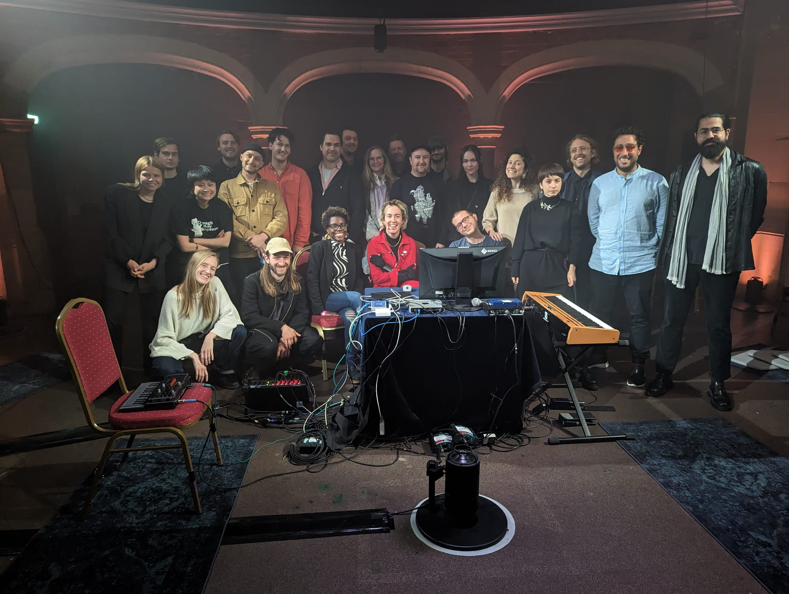
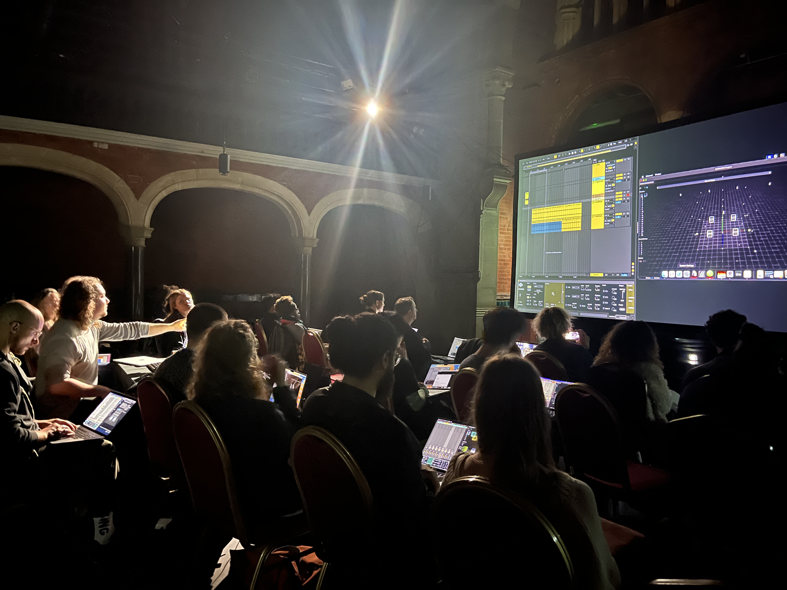
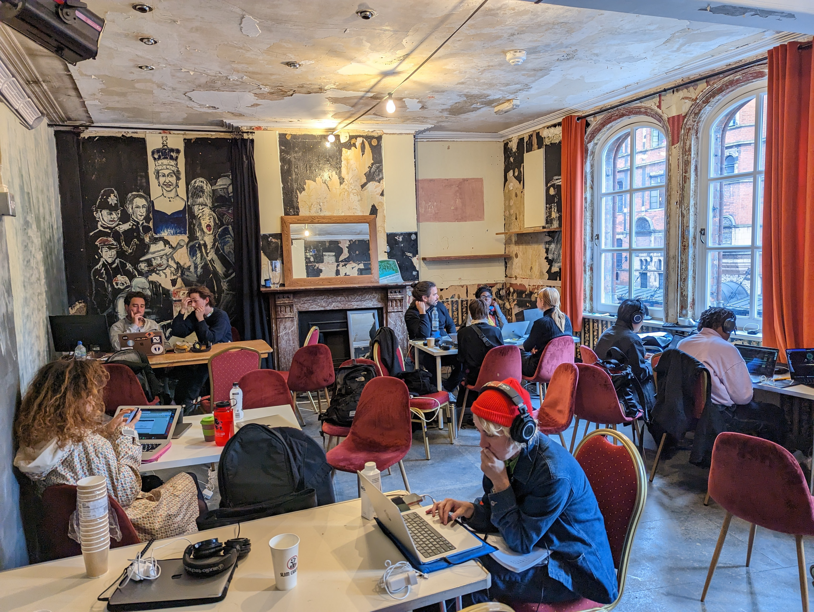
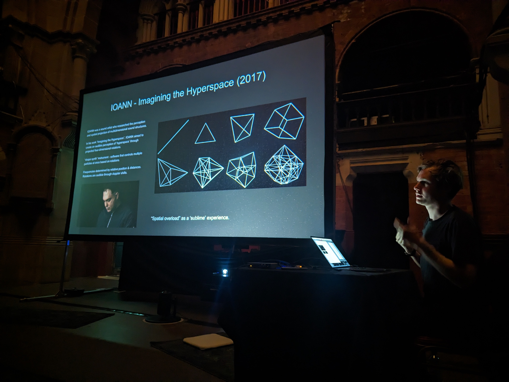
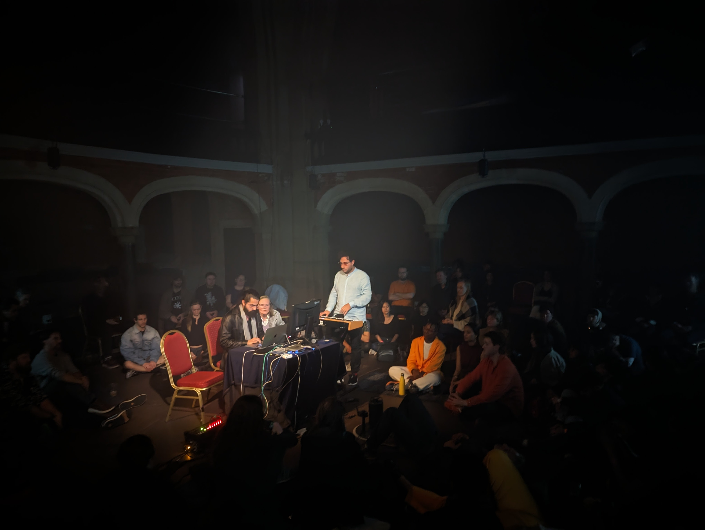
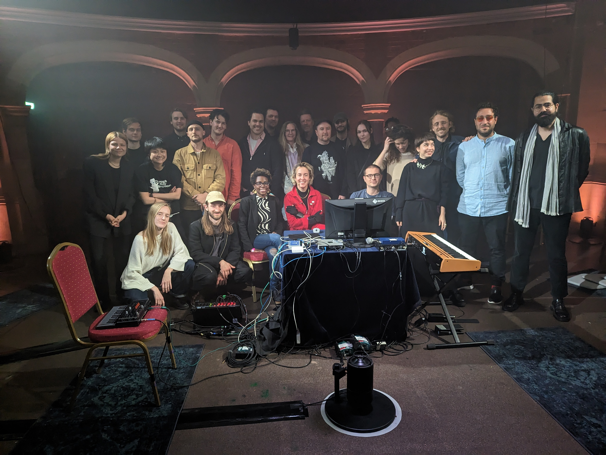

03 — Spatial Audio · 4DSOUND · Residency · London

All participants — Stone Nest, London, May 2023Exploring Spatial Sound was a 5-day residential course organised by Amoenus in collaboration with 4DSOUND — an Amsterdam-based studio whose approach to spatial audio as a creative medium is one of the most distinctive in contemporary practice. The course took place at Stone Nest, a historic arts venue in Soho, London, where a bespoke 4DSOUND system was installed for the residency.
Twenty participants — artists, musicians, creatives, performers, and designers from across the UK and beyond — were selected to explore the potential of spatial sound through the 4DSOUND technology. Over five days, they developed technical, theoretical, and creative understanding of how to produce and present spatial sound compositions.
Spatial audio as a creative medium — not headphones, not stereo, but sound as architecture: surrounding, moving, and inhabiting space.
The residency culminated in a public closing concert on Friday 19 May, where participants presented their works-in-progress to a live audience inside the Stone Nest space. Agustín Martínez was one of twenty participants selected through the open call.

Stone Nest venue, Soho
4DSOUND system — studio session
Workshop session — guest lectureDAY 01 — MON 15
System orientation, theoretical grounding in spatial audio principles, first exploratory sessions.
DAY 02 — TUE 16
Working with the 4DSOUND interface, spatial composition techniques, object-based audio.
DAY 03 — WED 17
Participants begin developing their own spatial works, individual and collaborative studio time.
DAY 04 — THU 18
Iterating and refining works in the 4DSOUND system, spatial mixing, rehearsal for closing event.
DAY 05 — FRI 19
Free public event — participants present works-in-progress to a live audience at Stone Nest.

Closing concert — Stone Nest, 19 May4DSOUND is an Amsterdam-based studio developing proprietary technology for omnidirectional spatial audio. Their system surrounds listeners in a three-dimensional sound field — sound moves through space in all directions, occupying it as a physical presence rather than a directional signal.
Working within the 4DSOUND environment inverts many assumptions of conventional sound production: there is no "speaker" to aim at, no stereo image to construct. Instead, the composer thinks spatially — placing sounds in three-dimensional coordinates, giving them movement, weight, and trajectory.
For Agustín, the residency extended the concerns of Data Resonance — which used sound as a medium for translating data into embodied experience — into the domain of pure spatial composition: exploring how sound can constitute, not merely accompany, an environment.

Public closing concert — Stone Nest, 19 May 2023